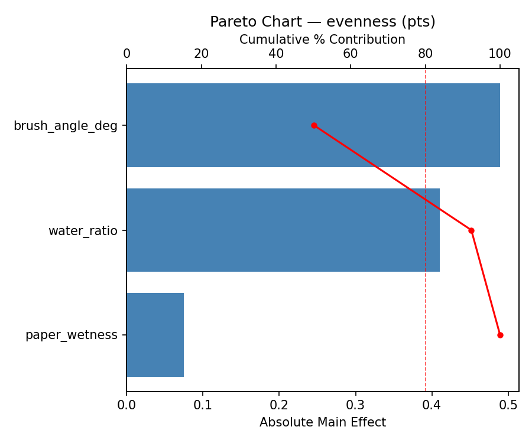
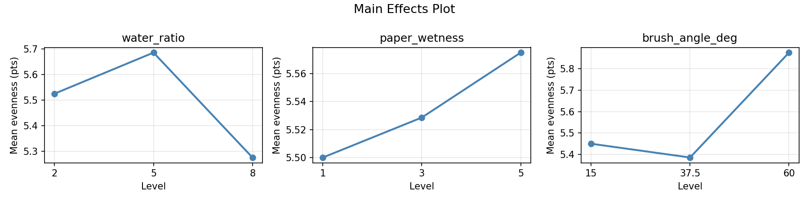
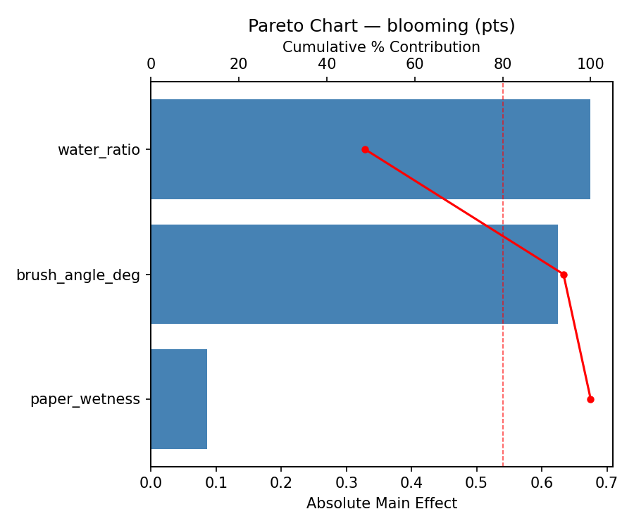
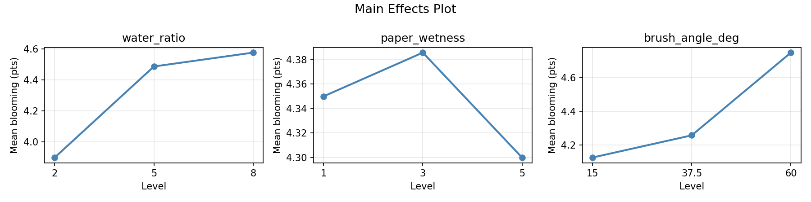
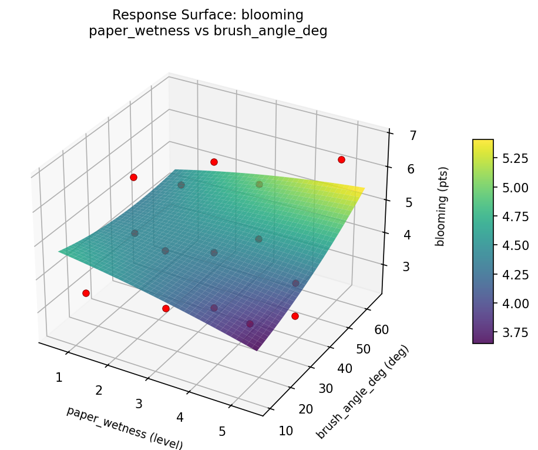
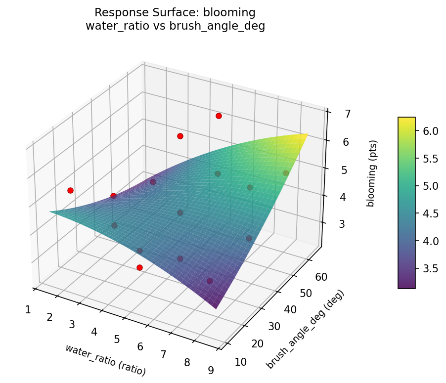
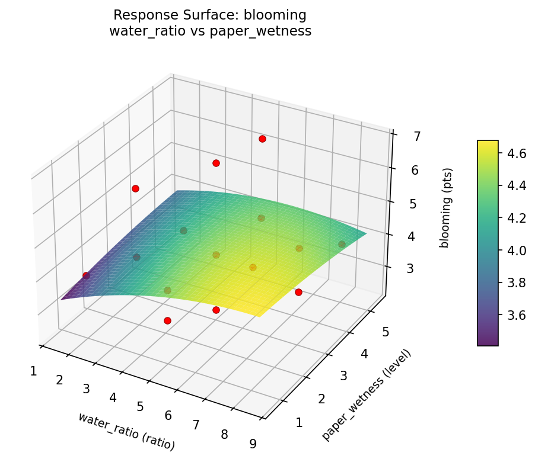
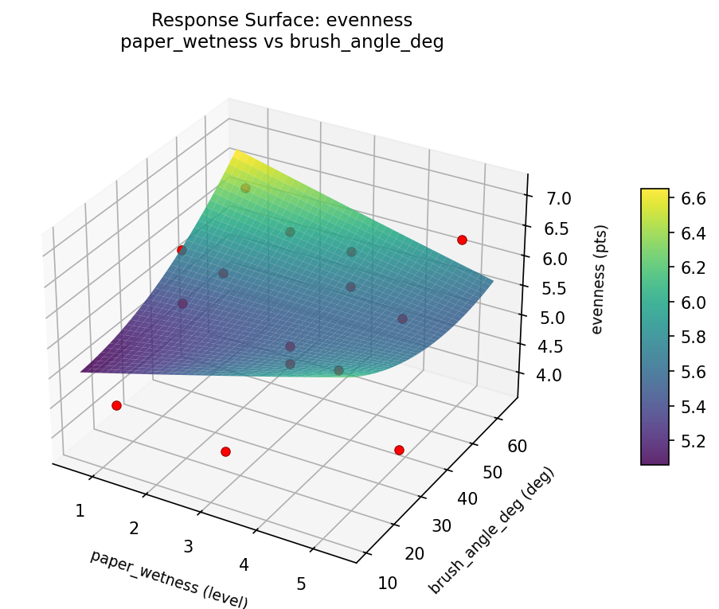
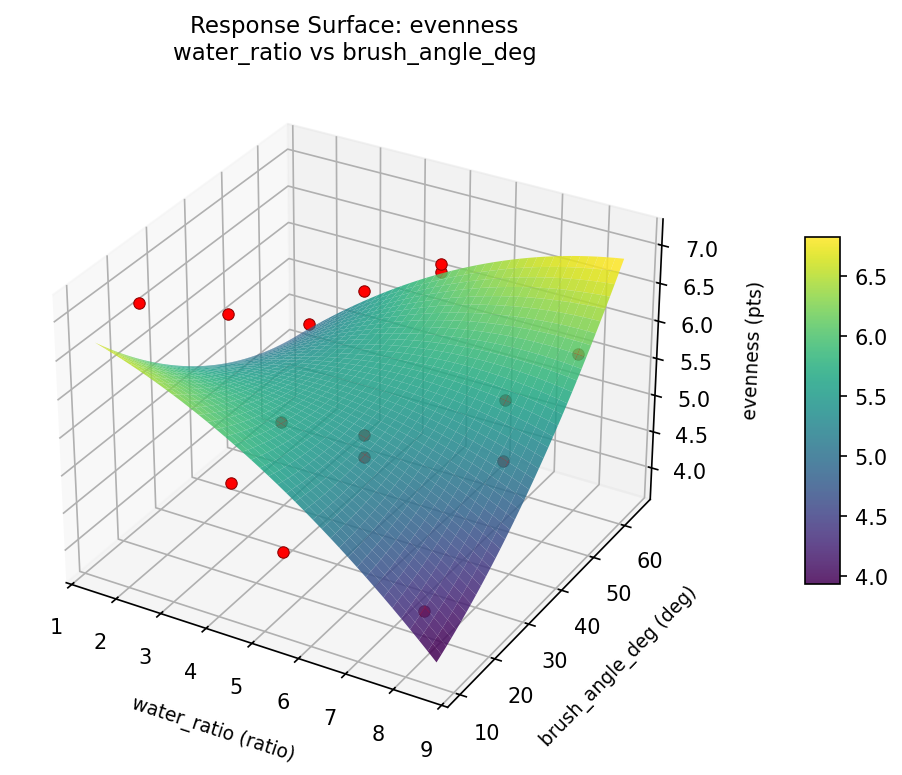
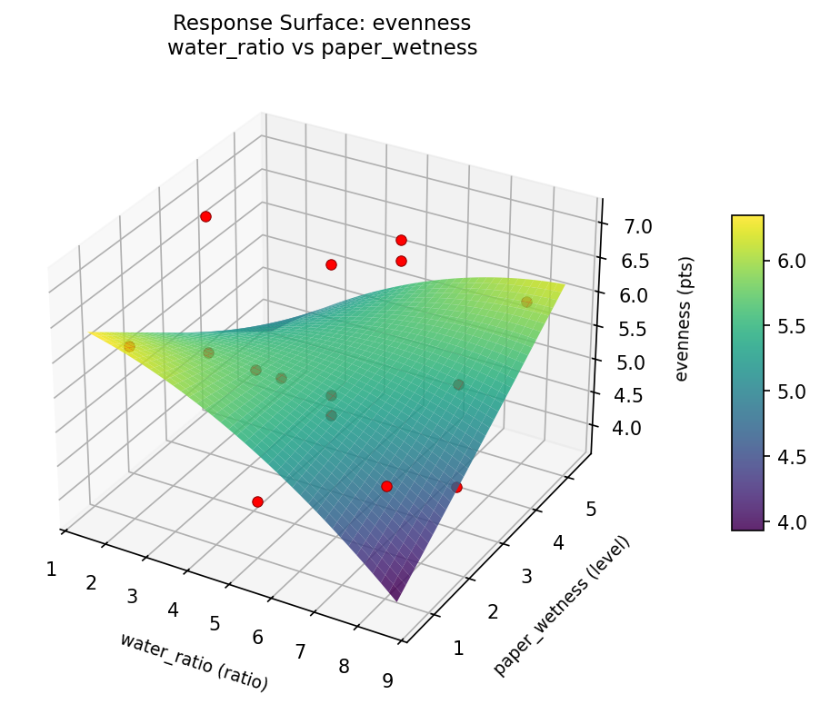

Summary
This experiment investigates watercolor wash technique. Box-Behnken design to maximize color evenness and minimize blooming by tuning water-to-pigment ratio, paper wetness, and brush angle.
The design varies 3 factors: water ratio (ratio), ranging from 2 to 8, paper wetness (level), ranging from 1 to 5, and brush angle deg (deg), ranging from 15 to 60. The goal is to optimize 2 responses: evenness (pts) (maximize) and blooming (pts) (minimize). Fixed conditions held constant across all runs include paper = 300gsm_cold_press, pigment = ultramarine.
A Box-Behnken design was chosen because it efficiently fits quadratic models with 3 continuous factors while avoiding extreme corner combinations — requiring only 15 runs instead of the 8 needed for a full factorial at two levels.
Quadratic response surface models were fitted to capture potential curvature and factor interactions. The RSM contour plots below visualize how pairs of factors jointly affect each response.
Key Findings
For evenness, the most influential factors were brush angle deg (50.2%), water ratio (42.1%), paper wetness (7.7%). The best observed value was 7.1 (at water ratio = 2, paper wetness = 1, brush angle deg = 37.5).
For blooming, the most influential factors were water ratio (48.7%), brush angle deg (45.1%), paper wetness (6.2%). The best observed value was 2.4 (at water ratio = 8, paper wetness = 3, brush angle deg = 15).
Recommended Next Steps
- Run confirmation experiments at the predicted optimal settings to validate the model.
- Consider whether any fixed factors should be varied in a future study.
Experimental Setup
Factors
| Factor | Low | High | Unit |
|---|
water_ratio | 2 | 8 | ratio |
paper_wetness | 1 | 5 | level |
brush_angle_deg | 15 | 60 | deg |
Fixed: paper = 300gsm_cold_press, pigment = ultramarine
Responses
| Response | Direction | Unit |
|---|
evenness | ↑ maximize | pts |
blooming | ↓ minimize | pts |
Configuration
{
"metadata": {
"name": "Watercolor Wash Technique",
"description": "Box-Behnken design to maximize color evenness and minimize blooming by tuning water-to-pigment ratio, paper wetness, and brush angle"
},
"factors": [
{
"name": "water_ratio",
"levels": [
"2",
"8"
],
"type": "continuous",
"unit": "ratio"
},
{
"name": "paper_wetness",
"levels": [
"1",
"5"
],
"type": "continuous",
"unit": "level"
},
{
"name": "brush_angle_deg",
"levels": [
"15",
"60"
],
"type": "continuous",
"unit": "deg"
}
],
"fixed_factors": {
"paper": "300gsm_cold_press",
"pigment": "ultramarine"
},
"responses": [
{
"name": "evenness",
"optimize": "maximize",
"unit": "pts"
},
{
"name": "blooming",
"optimize": "minimize",
"unit": "pts"
}
],
"settings": {
"operation": "box_behnken",
"test_script": "use_cases/281_watercolor_wash/sim.sh"
}
}
Experimental Matrix
The Box-Behnken Design produces 15 runs. Each row is one experiment with specific factor settings.
| Run | water_ratio | paper_wetness | brush_angle_deg |
|---|
| 1 | 5 | 1 | 15 |
| 2 | 5 | 3 | 37.5 |
| 3 | 8 | 3 | 60 |
| 4 | 8 | 3 | 15 |
| 5 | 5 | 3 | 37.5 |
| 6 | 5 | 3 | 37.5 |
| 7 | 2 | 3 | 60 |
| 8 | 8 | 1 | 37.5 |
| 9 | 5 | 1 | 60 |
| 10 | 8 | 5 | 37.5 |
| 11 | 2 | 3 | 15 |
| 12 | 5 | 5 | 60 |
| 13 | 2 | 1 | 37.5 |
| 14 | 2 | 5 | 37.5 |
| 15 | 5 | 5 | 15 |
Step-by-Step Workflow
1
Preview the design
$ python doe.py info --config use_cases/281_watercolor_wash/config.json
2
Generate the runner script
$ python doe.py generate --config use_cases/281_watercolor_wash/config.json \
--output use_cases/281_watercolor_wash/results/run.sh --seed 42
3
Execute the experiments
$ bash use_cases/281_watercolor_wash/results/run.sh
4
Analyze results
$ python doe.py analyze --config use_cases/281_watercolor_wash/config.json
5
Get optimization recommendations
$ python doe.py optimize --config use_cases/281_watercolor_wash/config.json
6
Generate the HTML report
$ python doe.py report --config use_cases/281_watercolor_wash/config.json \
--output use_cases/281_watercolor_wash/results/report.html
Features Exercised
| Feature | Value |
|---|
| Design type | box_behnken |
| Factor types | continuous (all 3) |
| Arg style | double-dash |
| Responses | 2 (evenness ↑, blooming ↓) |
| Total runs | 15 |
Analysis Results
Generated from actual experiment runs using the DOE Helper Tool.
Response: evenness
Top factors: brush_angle_deg (50.2%), water_ratio (42.1%), paper_wetness (7.7%).
Pareto Chart

Main Effects Plot

Response: blooming
Top factors: water_ratio (48.7%), brush_angle_deg (45.1%), paper_wetness (6.2%).
Pareto Chart

Main Effects Plot

Response Surface Plots
3D surfaces fitted with quadratic RSM. Red dots are observed data points.
blooming paper wetness vs brush angle deg

blooming water ratio vs brush angle deg

blooming water ratio vs paper wetness

evenness paper wetness vs brush angle deg

evenness water ratio vs brush angle deg

evenness water ratio vs paper wetness

Full Analysis Output
RSM surface: rsm_evenness_water_ratio_vs_paper_wetness.png
RSM surface: rsm_evenness_water_ratio_vs_brush_angle_deg.png
RSM surface: rsm_evenness_paper_wetness_vs_brush_angle_deg.png
RSM surface: rsm_blooming_water_ratio_vs_paper_wetness.png
RSM surface: rsm_blooming_water_ratio_vs_brush_angle_deg.png
RSM surface: rsm_blooming_paper_wetness_vs_brush_angle_deg.png
=== Main Effects: evenness ===
Factor Effect Std Error % Contribution
--------------------------------------------------------------
brush_angle_deg 0.4893 0.2572 50.2%
water_ratio 0.4107 0.2572 42.1%
paper_wetness 0.0750 0.2572 7.7%
=== Summary Statistics: evenness ===
water_ratio:
Level N Mean Std Min Max
------------------------------------------------------------
2 4 5.5250 1.4104 3.8000 7.1000
5 7 5.6857 0.9686 4.4000 6.9000
8 4 5.2750 0.7890 4.2000 6.0000
paper_wetness:
Level N Mean Std Min Max
------------------------------------------------------------
1 4 5.5000 0.8756 4.4000 6.3000
3 7 5.5286 1.1026 4.2000 7.1000
5 4 5.5750 1.1955 3.8000 6.4000
brush_angle_deg:
Level N Mean Std Min Max
------------------------------------------------------------
15 4 5.4500 1.3916 4.2000 7.1000
37.5 7 5.3857 1.0286 3.8000 6.9000
60 4 5.8750 0.6021 5.1000 6.4000
=== Main Effects: blooming ===
Factor Effect Std Error % Contribution
--------------------------------------------------------------
water_ratio 0.6750 0.3266 48.7%
brush_angle_deg 0.6250 0.3266 45.1%
paper_wetness 0.0857 0.3266 6.2%
=== Summary Statistics: blooming ===
water_ratio:
Level N Mean Std Min Max
------------------------------------------------------------
2 4 3.9000 1.0985 2.9000 5.4000
5 7 4.4857 1.5795 2.4000 6.8000
8 4 4.5750 0.9430 3.7000 5.7000
paper_wetness:
Level N Mean Std Min Max
------------------------------------------------------------
1 4 4.3500 0.9747 3.4000 5.7000
3 7 4.3857 1.4668 2.4000 6.8000
5 4 4.3000 1.4855 2.9000 6.4000
brush_angle_deg:
Level N Mean Std Min Max
------------------------------------------------------------
15 4 4.1250 0.8846 3.4000 5.4000
37.5 7 4.2571 1.5306 2.4000 6.8000
60 4 4.7500 1.3026 3.3000 6.4000
Pareto chart (evenness): use_cases/281_watercolor_wash/results/analysis/pareto_evenness.png
Pareto chart (blooming): use_cases/281_watercolor_wash/results/analysis/pareto_blooming.png
Main effects (evenness): use_cases/281_watercolor_wash/results/analysis/main_effects_evenness.png
Main effects (blooming): use_cases/281_watercolor_wash/results/analysis/main_effects_blooming.png
Optimization Recommendations
=== Optimization: evenness ===
Direction: maximize
Best observed run: #12
water_ratio = 2
paper_wetness = 1
brush_angle_deg = 37.5
Value: 7.1
RSM Model (linear, R² = 0.0034, Adj R² = -0.2684):
Coefficients:
intercept +5.5333
water_ratio +0.0125
paper_wetness -0.0750
brush_angle_deg -0.0125
RSM Model (quadratic, R² = 0.8896, Adj R² = 0.6908):
Coefficients:
intercept +4.4333
water_ratio +0.0125
paper_wetness -0.0750
brush_angle_deg -0.0125
water_ratio*paper_wetness +1.1500
water_ratio*brush_angle_deg +0.5250
paper_wetness*brush_angle_deg +0.0500
water_ratio^2 +0.2958
paper_wetness^2 +1.1208
brush_angle_deg^2 +0.6458
Curvature analysis:
paper_wetness coef=+1.1208 convex (has a minimum)
brush_angle_deg coef=+0.6458 convex (has a minimum)
water_ratio coef=+0.2958 convex (has a minimum)
Notable interactions:
water_ratio*paper_wetness coef=+1.1500 (synergistic)
water_ratio*brush_angle_deg coef=+0.5250 (synergistic)
Predicted optimum (from quadratic model):
water_ratio = 2
paper_wetness = 1
brush_angle_deg = 37.5
Predicted value: 7.0625
Model quality: Good fit — general trends are captured, some noise remains.
Factor importance:
1. paper_wetness (effect: 1.1, contribution: 60.4%)
2. brush_angle_deg (effect: 0.6, contribution: 29.8%)
3. water_ratio (effect: 0.2, contribution: 9.8%)
=== Optimization: blooming ===
Direction: minimize
Best observed run: #9
water_ratio = 8
paper_wetness = 3
brush_angle_deg = 15
Value: 2.4
RSM Model (linear, R² = 0.1910, Adj R² = -0.0297):
Coefficients:
intercept +4.3533
water_ratio +0.3375
paper_wetness +0.2750
brush_angle_deg +0.5875
RSM Model (quadratic, R² = 0.8327, Adj R² = 0.5315):
Coefficients:
intercept +3.2000
water_ratio +0.3375
paper_wetness +0.2750
brush_angle_deg +0.5875
water_ratio*paper_wetness +0.7000
water_ratio*brush_angle_deg +0.6250
paper_wetness*brush_angle_deg +0.5500
water_ratio^2 +0.7125
paper_wetness^2 +1.4875
brush_angle_deg^2 -0.0375
Curvature analysis:
paper_wetness coef=+1.4875 convex (has a minimum)
water_ratio coef=+0.7125 convex (has a minimum)
brush_angle_deg coef=-0.0375 negligible curvature
Notable interactions:
water_ratio*paper_wetness coef=+0.7000 (synergistic)
water_ratio*brush_angle_deg coef=+0.6250 (synergistic)
paper_wetness*brush_angle_deg coef=+0.5500 (synergistic)
Predicted optimum (from quadratic model):
water_ratio = 8
paper_wetness = 5
brush_angle_deg = 37.5
Predicted value: 6.7125
Model quality: Good fit — general trends are captured, some noise remains.
Factor importance:
1. paper_wetness (effect: 1.7, contribution: 44.7%)
2. brush_angle_deg (effect: 1.2, contribution: 30.6%)
3. water_ratio (effect: 0.9, contribution: 24.7%)